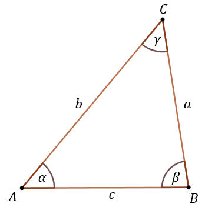
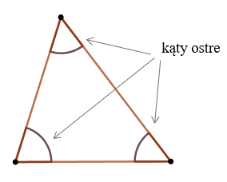
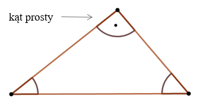
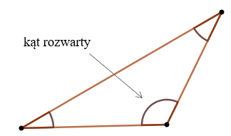
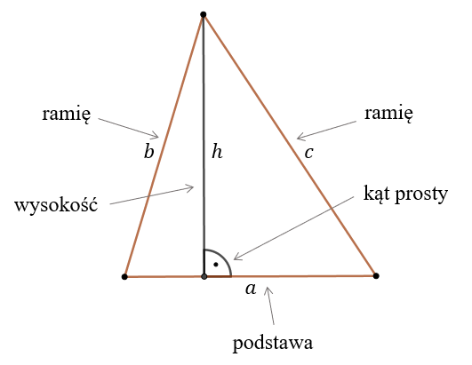
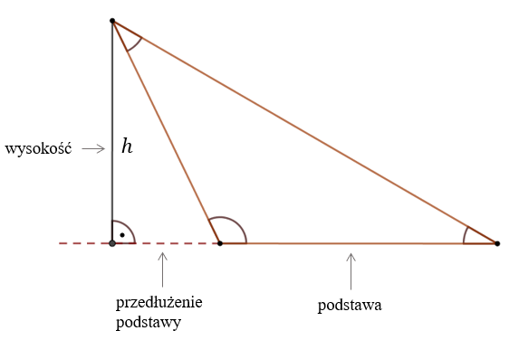

Trójkąt - to wielokąt o trzech bokach.

Trójkąt o wierzchołkach \(A,B,C\), bokach \(a,b,c\) i kątach wewnętrznych
\(\alpha, \beta, \gamma \).
Trójkąt można określić jako:
- ostrokątny - jeżeli ma wszystkie kąty ostre (od \(0^\circ \) do \(90^\circ \)), 
Trójkąt ostrokątny
- prostokątny - jeżeli ma jeden kąt prosty (\(90^\circ \)), 
Trójkąt prostokątny
- rozwartokątny - jeżeli ma jeden kąt rozwarty (większy niż \(90^\circ \)). 
Trójkąt rozwartokątny
W każdym trójkącie suma miar kątów wewnętrznych wynosi \(180^\circ \).
Wysokosć - to odcinek poprowadzony z wierzchołka trójkąta na przeciwległy bok (lub jego
przedłużenie) pod kątem prostym.
Bok trójkąta na który opuszczamy wysokość często nazywamy
podstawą, a dwa pozostałe boki - ramionami. 
Trójkąt o podstawie \(a\), ramionach \(b\) i \(c\) oraz wysokości \(h\).

Trójkąt rozwartokątny i wysokość opuszczona na przedłużenie podstawy.
Mamy
kilka szczególnych trójkątów:
- Trójkąt równoramienny - to trójkąt o dwóch bokach równej długości.,
- Trójkąt równoboczny - to trójkąt o trzech bokach równej długości.
- Trójkąt prostokątny - to trójkąt o kącie prostym między dwoma bokami.
Dokładniejsze informacje i wzory znajdziesz w kolejnych rozdziałach.